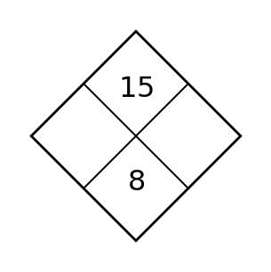
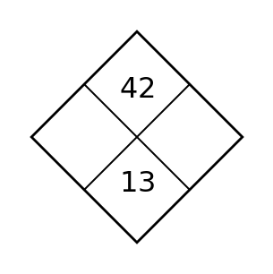

1
Compute $\frac{2}{3}\cdot\frac{3}{5}$.
Compute $\frac{2}{3}\cdot\frac{3}{5}$.
Compute $\frac{5}{8}\cdot\frac{4}{15}$.
Compute $\frac{7}{9}\cdot\frac{3}{14}$.
Complete the diamond.

Solve $x+6=18$.
Solve $6x=48$.
Solve $x-12=-3$.
Solve $\frac{x}{5}=9$.
Plot $A(-3,2)$ on the coordinate plane.

Plot $B(4,-1)$ on the coordinate plane.
Point $C$ is shown. State its coordinates and quadrant.
Give an ordered pair in Quadrant IV and plot it.
Complete the diamond.

Compute $\frac{3}{8}+\frac{1}{4}$ and simplify.
Solve $\frac{x}{3}=8$.
Plot $D(-4,-2)$ on the coordinate plane.